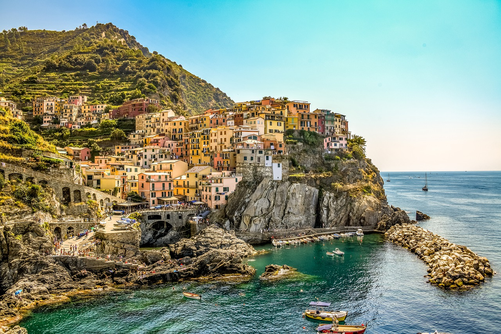

About Italy
Italy is one of Western Europes youngest countries even though it has the longest history. It was established as a country in 1861. Some of the reasons someone would go to Italy would be to enjoy their cuisine, history, fashion, architercture and art. There are many ancient ruines, museums, moutains, beaches, and natural scenery. Italy is home to the Vatican city the worlds smallest country. Italy is home to the Sistine Chapel featuring Michelangelos work.Some of the things Italy is most known for is there pasta, pizza, Vespas, and cars.